04_USB协议层数据格式#
参考资料：
《圈圈教你玩USB》
简书jianshu_kevin@126.com的文章
官网：https://www.usb.org/documents

《usb_20.pdf》的《Chapter 8 Protocol Layer》
USB的NRZI信号格式：https://zhuanlan.zhihu.com/p/460018993
USB2.0包Packet的组成：https://www.usbzh.com/article/detail-459.html
1. 硬件拓扑结构#
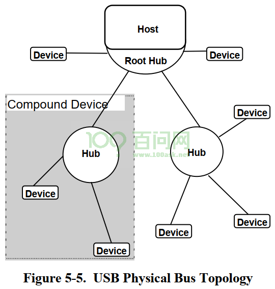
compound device ：多个设备组合起来，通过HUB跟Host相连
composite device ：一个物理设备有多个逻辑设备(multiple interfaces)
在软件开发过程中，我们可以忽略Hub的存在，硬件拓扑图简化如下：
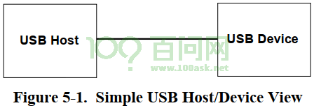
一个物理设备里面可能有多个逻辑设备，Hos可以外接多个逻辑设备，硬件拓扑图如下：
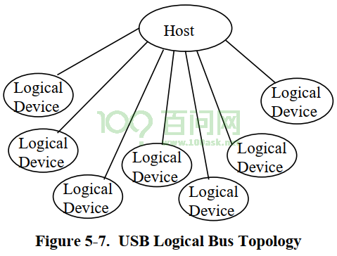
2. 协议层#
要理解协议层、理解数据如何传输，带着这几个问题去看文档、看视频：
如何寻址设备？
如何表示数据方向(读、还是写)
如何确认结果？
提前罗列出来：
USB系统是一个Host对应多个设备，要传输数据首先要通知设备：
发出IN令牌包：表示想读数据，里面含有设备地址
发出OUT令牌包：表示想写数据，里面含有设备地址
数据阶段：
Host想读数据：前面发出IN令牌包后，现在读取数据包
Host想发出数据：前面发出OUT令牌包后，现在发出数据包
结果如何？有握手包
Host想读数据，设备可能未就绪，就会回应NAK包
Host想写数据，它发出数据后，设备正确接收了，就回复ACK包
2.1 字节/位传输顺序#
先传输最低位(LSB)。在后续文档中，描述数据时按照传输顺序从左到右列出来。
2.2 SYNC域#
Host发出SOP信号后，就会发出SYNC信号：它是一系列的、最大传输频率的脉冲，接收方使用它来同步数据。对于低速/全速设备，SYNC信号是8位数据(从做到右是00000001)；对于高速设备，SYNC信号是32位数据(从左到右是00000000000000000000000000000001)。使用NRZI编码时，前面每个”0”都对应一个跳变。
在很多文档里，把SOP和SYNC统一称为”SYNC”，它的意思是”SYNC”中含有”SOP”。
2.3 包格式#
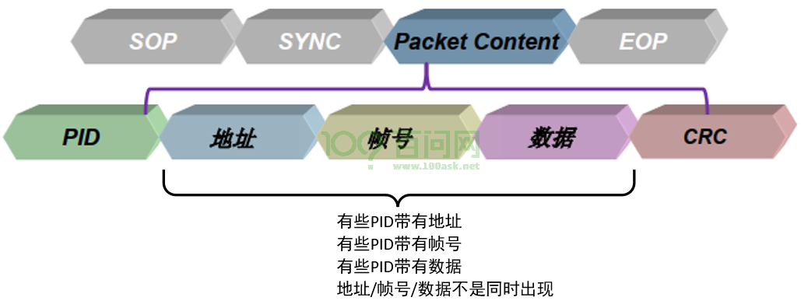
USB总线上传输的数据以包为单位。USB包里含有哪些内容(“域”)？
SOP：用来表示包的起始
SYNC：用来同步时钟
PID：表示包的类型
地址：在USB硬件体系中，一个Host对应多个Logical Device，那么Host发出的包，如何确定发给谁？
发给所有设备：包里不含有设备地址
发给某个设备：包里含有设备地址、端点号
帧号、数据等跟PID相关的内容
CRC校验码
发起一次完整的传输，可能涉及多个包。那么，第1个包里含有设备地址、端点号，后续的包就没必要包含设备地址、端点号。
2.3.1 PID域#
注意：所有的USB文档提到的”输入”、”输出”，都是基于Host的角度，”输出”表示从Host输出到设备，”输入”表示Host从设备得到数据。
有哪些USB包？根据包数据里的PID的bit1, bit0可以分为4类：
令牌包(Token)：01B
数据包(Data)：11B
握手包(Handshake)：10B
特殊包(Special)：00B
PID有4位，使用bit1,bit0确定分类，使用bit3,bit2进一步细分。如下表(来自《圈圈教你玩USB》)所示：
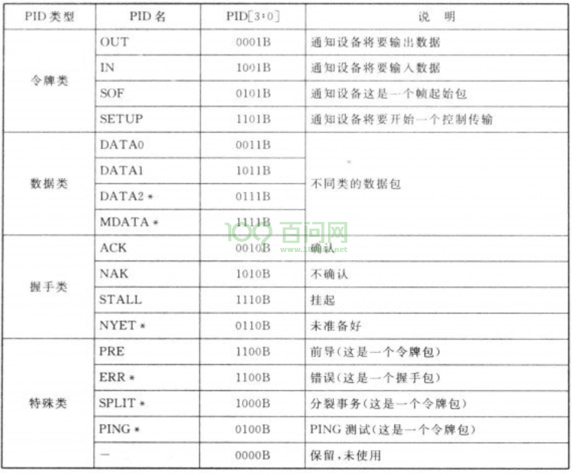
在USB包中，PID域使用8位来表示，格式如下：
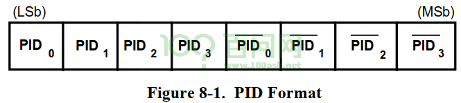
前4位表示PID，后4位是对应位的取反。接收方发现后4位不是前4位的取反的话，就认为发生了错误。
2.3.2 令牌包(Token)#
令牌类的PID，起”通知作用”，通知谁？SOF令牌包被用来通知所有设备，OUT/IN/SETUP令牌包被用来通知某个设备。
对于OUT、IN、SETUP令牌包，它们都是要通知到具体的设备，格式如下：
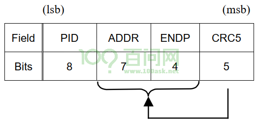
USB设备的地址有7位，格式如下：
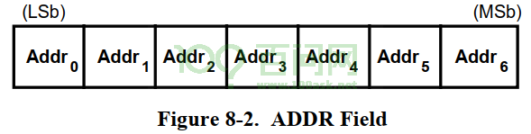
USB设备的端点号有4位，格式如下：
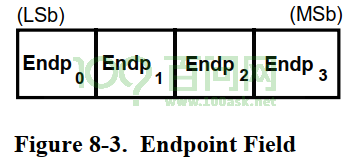
对于SOF包，英文名为”Start-of-Frame marker and frame number”。对于USB全速设备，Host每1ms产生一个帧；对于高速设备，每125us产生一个微帧，1帧里有8个微帧。Host会对当前帧号进行累加计数，在每帧或每微帧开始时，通过SOF令牌包发送帧号。对于高速设备，每1毫秒里有8个微帧，这8个微帧的帧号是一样的，每125us发送一个SOF令牌包。
SOF令牌包格式如下：
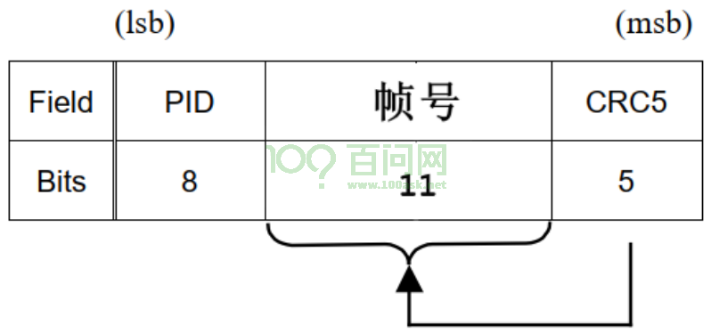
2.3.3 数据包#
Host使用OUT、IN、SETUP来通知设备：我要传输数据了。数据通过”数据包”进行传输。
数据包也有4种类型：DATA0、DATA1、DATA2、MDATA。其中DATA2、MDATA在高速设备中使用。对软件开发人员来说，我们暂时仅需了解DATA0、DATA1。
为什么要引入DATA0、DATA1这些不同类型的数据包？为了纠错。
Host和设备都会维护自己的数据包切换机制，当数据包成功发送或者接收时，数据包类型切换。当检测到对方使用的数据包类型不对时，USB系统认为发生了错误。
比如：
Host发送DATA0给设备，设备返回ACK表示成功接收，设备期待下一个数据是DATA1
但是Host没有接收到ACK，Host认为数据没有发送成功，Host继续使用DATA0发送上一次的数据
设备再次接收到DATA0数据包，它就知道：哦，这是重传的数据包
数据包格式如下：
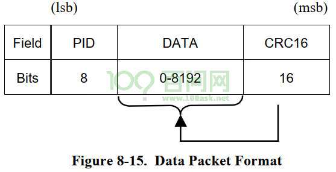
对于全速设备，数据包中的数据做大是1023字节；对于全速设备，数据包中的数据做大是1024字节。
2.3.4 握手包#
握手包有4类：ACK、NAK、STALL、NYET
ACK：数据接收方用来回复发送方，表示正确接收到了数据并且有足够的空间保存数据。
NAK：Host发送数据给设备时，设备可以回应NAK表示”我还没准备好，没办法接收数据”；Host想读取设备的数据时，设备可以回复NAK表示”我没有数据给你”。
STALL：表示发生了错误，比如设备无法执行这个请求(不支持该断点等待)、断点已经挂起。设备返回STALL后，需要主机进行干预才能接触STALL状态。
NYET：仅适用于高速设备。Host可以发出PING包用来确认设备有数据，设备可以回应NYET表示”还没呢”。Hub也可以回应NYET表示低速/全速传输还没完结。
2.4 传输细节#
2.4.1 传输(Transfer)和事务(Transaction)#
USB传输的基本单位是包(Packet)，包的类型由PID表示。一个单纯的包，是无法传输完整的数据。
为什么？比如想输出数据，可以发出OUT令牌包，OUT令牌包可以指定目的地。但是数据如何传输呢？还需要发出DATA0或DATA1数据包。设备收到数据后，还要回复一个ACK握手包。
所以，完整的数据传输，需要涉及多个包：令牌包、数据包、握手包。这个完整的数据传输过程，被称为事务(Transaction)。
有些事务需要握手包，有些事务不需要握手包，有些事务可以传输很大的数据，有些事务只能传输小量数据。
有四类事务：
批量事务：用来传输大量的数据，数据的正确性有保证，时效没有保证。
中断事务：用来传输周期性的、小量的数据，数据的正确性和时效都有保证。
实时事务：用来传输实时数据，数据的正确性没有保证，时效有保证。
建立事务：跟批量事务类似，只不过令牌包是SETUP令牌包。
有四类传输(Transfer)：
批量传输：就是使用批量事务实现数据传输，比如U盘。
中断传输：就是使用中断事务实现数据传输，比如鼠标。
实时传输：就是使用实时事务实现数据传输，比如摄像头。
控制传输：由建立事务、批量事务组成，所有的USB设备都必须支持控制传输，用于”识别/枚举”
暂时记住这个关系：
BIT组成域(Field)
域组成包(Packet)
包组成事务(Transaction)
事务组成传输(Transfer)
2.4.2 过程(stage)和阶段(phase)#
事务由多个包组成，比如Host要发送数据给设备，这就会涉及很多个包：
Host发出OUT令牌包，表示要发数据给哪个设备
Host发出DATA0数据包
设备收到数据后，回应ACK包
这个完整的事务涉及3个包(Packet)，分为3个阶段(Phase)：
令牌阶段(Token phase)：由令牌包实现
数据阶段(Data phase)：由数据包实现
握手阶段(Handshake phase)：由握手包实现
事务由包组成，这些包分别处于3个阶段(phase)：令牌阶段，数据阶段，握手阶段。
对于批量传输、中断传输、实时传输，它们分别由一个事务组成，不再细分为若干个过程。
但是控制传输由多个事务组成，这些事务分别处于3个过程：建立过程(stage)、数据过程(stage)、状态过程(stage)。
总结起来就是：
控制传输由多个过程(stage)组成，每个过程由一个事务来实现
每个事务由多个阶段(phase)组成，每个阶段有一个包来实现
2.4.3 批量传输#
批量传输用批量事务来实现，用于传输大量的数据，数据的正确性有保证，时效没有保证。
批量事务由3个阶段(phase)组成：令牌阶段、数据阶段、握手阶段。每个阶段都是一个完整的包，含有SOP、SYNC、PID、EOP。
下图中各个矩形框就对应一个完整的包。
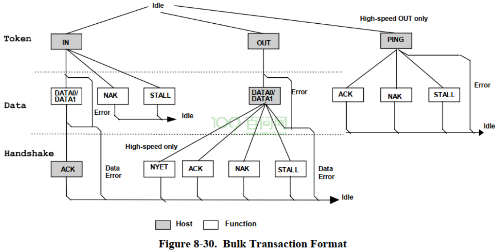
《圈圈教你玩USB》中有详细的示例：
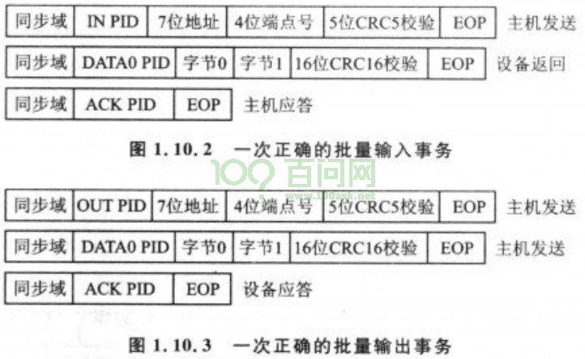
2.4.4 中断传输#
中断传输用中断事务来实现，用于传输小量的、周期性的数据，数据的正确性和时效都有保证。
中断事务由3个阶段(phase)组成：令牌阶段、数据阶段、握手阶段。每个阶段都是一个完整的包，含有SOP、SYNC、PID、EOP。
下图中各个矩形框就对应一个完整的包。
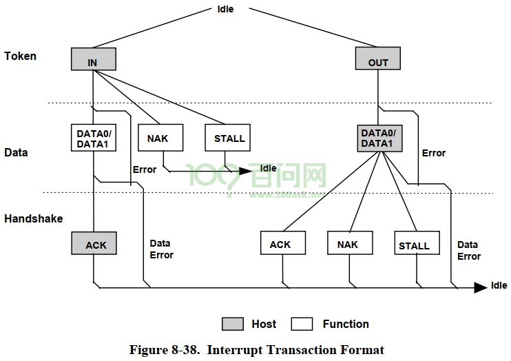
中断事务跟批量事务非常类似，Host使用它来周期性地读数据、写数据。
以鼠标为例，我们需要及时获得鼠标的数据，不及时的话你会感觉鼠标很迟钝。但是USB协议中并没有中断功能，它使用”周期性的读、写”来实现及时性。具体过程如下：
Host每隔n毫秒发出一个IN令牌包
鼠标有数据的话，发出DATA0或DATA1数据包给Host；鼠标没有数据的话，发出NAK给Host。
中断事务的优先级比批量事务更高，它要求实时性，而批量事务不要求实时性。
2.4.5 实时传输#
实时传输用实时事务来实现，用于传输实时数据，对数据的正确性没有要求。
实时事务由2个阶段(phase)组成：令牌阶段、数据阶段。每个阶段都是一个完整的包，含有SOP、SYNC、PID、EOP。
实时事务不需要握手阶段，一个示例的场景是：为了传输摄像头的实时数据，偶尔的数据错误是可以忍受的，大不了出现短暂的花屏。如果为了解决花屏而重传数据，那就会导致后续画面被推迟，实时性无法得到保证。
下图中各个矩形框就对应一个完整的包。
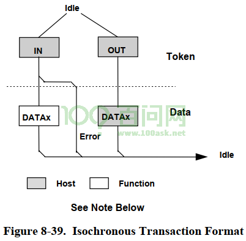
实时事务跟中断事务非常类似，Host也会周期性的发起实时事务，主要区别在于：
实时事务不要求准确性，没有握手阶段
实时事务传输的数据量比较大，中断事务传输的数据量比较小
2.4.6 控制传输#
在使用批量传输时，使用IN令牌包或OUT令牌包表示数据传输方向。
控制传输的令牌包永远是SETUP，怎么分辨是读数据，还是写数据？发出SETUP令牌包后，还要发出DATA0数据包，根据数据的内容来确定后续是读数据，还是写数据。这个过程称为”建立事务”(SETUP Transaction)
但是控制传输由多个事务组成，这些事务分别处于3个过程：建立过程(stage)、数据过程(stage)、状态过程(stage)。
建立过程(stage)，使用SETUP事务：Host发出SETUP令牌包、DATA0数据包、得到ACK握手包
数据过程(stage)，使用批量事务：
对于输出：Host发出OUT令牌包，发出DATA0、DATA1数据包、得到ACK握手包
对于输入：Host发出IN令牌包，读到DATA0、DATA1数据包、发出ACK握手包
状态过程(stage)，使用批量事务：
对于输出：Host发出IN令牌包，读到DATA1数据包，发出ACK握手包
对于输入：Host发出OUT令牌包，发出DATA1数据包，等待ACK握手包
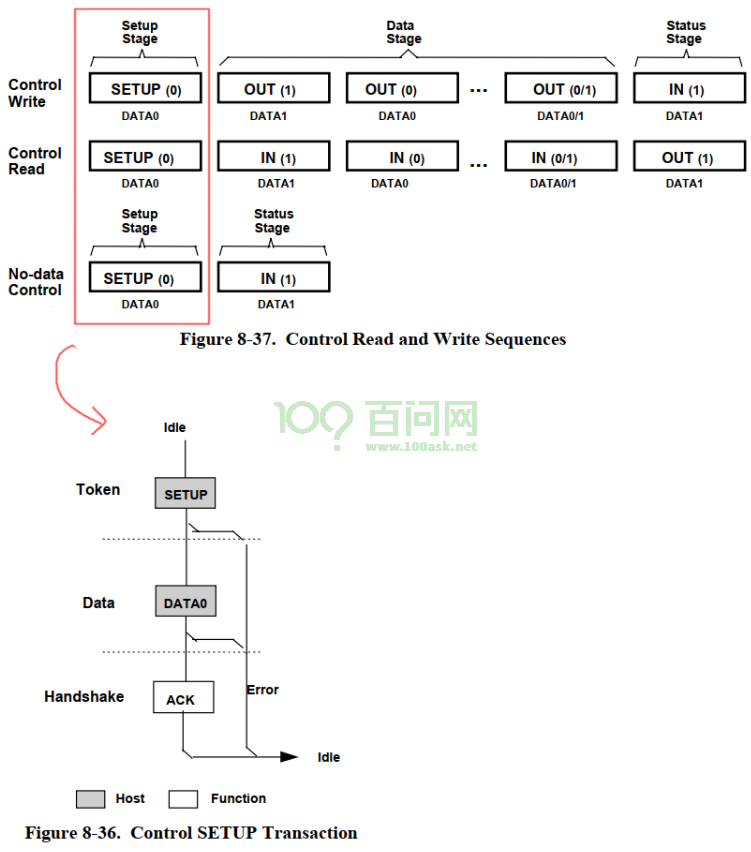
上图中的每一个方框，都是一个完整的事务，含有：Token Packet、Data Packet、Handshake Packet。
3. 使用工具体验数据格式#
LeCroy(力科)成立于1964年，是一家专业生产示波器厂家。旗下生产有数字示波器、SDA系列数字示波器、混合信号示波器、模块化仪器、任意波形发生器。 官网是：https://teledynelecroy.com/，似乎无法注册新用户，无法下载软件。 可以在搜索引擎里搜”usbprotocolsuite”。
安装”usbprotocolsuite”后，可以在文档目录里找打很多示程序(后缀名为usb)：
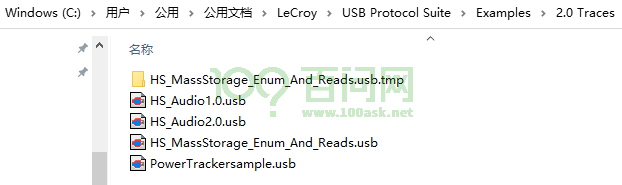
使用”usbprotocolsuite”打开这些文件，即可体验USB数据传输：
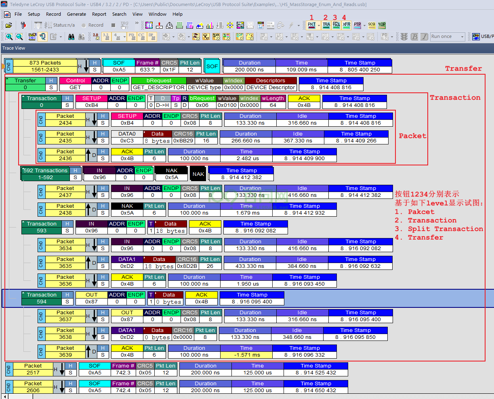